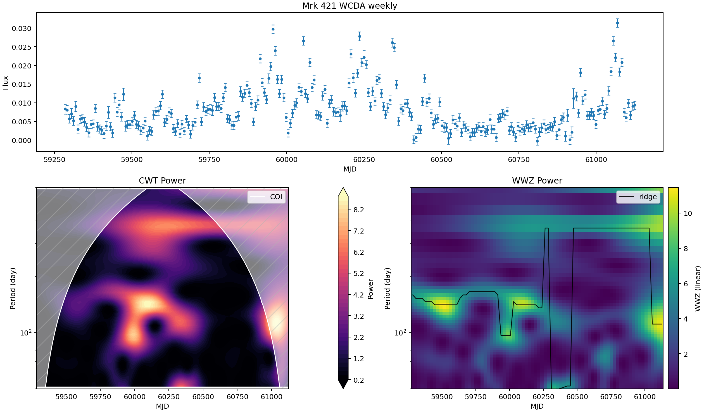
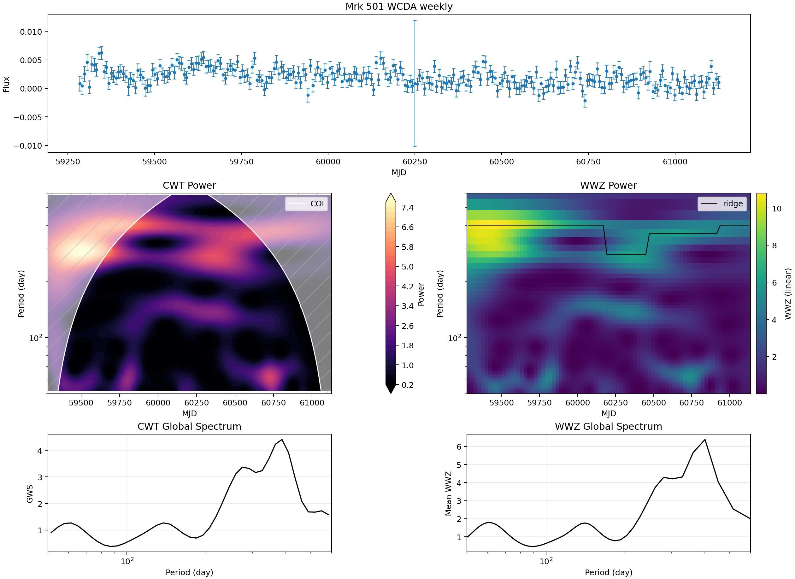

Mrk 421 / Mrk 501 WCDA Periodicity Analysis v1
数据与对齐
本报告使用的 WCDA 合并产品为：
data/processed/wcda_week/LHAASO-WCDA_Mkn421_2021-03-08_2026-03-29_week.csvdata/processed/wcda_day/LHAASO-WCDA_Mkn421_2025-03-29_2026-03-29_day.csvdata/processed/wcda_week/LHAASO-WCDA_Mkn501_2021-03-08_2026-03-29_week.csv
本地中间结果按源分离保存到 data/processed/aligned/mkn421/、data/processed/aligned/mkn501/、data/processed/periodicity/mkn421/ 与 data/processed/periodicity/mkn501/。Mrk 421 保留 Fermi weekly 对齐到 WCDA weekly MJD 轴的对照；Mrk 501 当前只使用 WCDA weekly，因为本工作区尚未提供 Mrk 501 的 WCDA daily 或 Fermi weekly 产品。
方法
WCDA flux 使用 excess rate 表示：sum(n_on - n_bkg) / tobs，误差使用逐 hit bin 传播的 Poisson-style on/off 近似。CWT 使用 pycwt 的 Morlet wavelet，WWZ 使用 libwwz，入口脚本为 src/pipeline/periodicity_v1.py。
WWZ 热图采用对数颜色归一化，周期轴也使用对数刻度，以提高整个搜索周期范围内的可视化对比度。该修改只影响显示方式；WWZ 峰值搜索仍使用保存的线性 power 数值。
当前 v1 不包含 red-noise simulations、Monte Carlo thresholds、local significance contours、pre-trial significance 或 post-trial significance。
峰值摘要
| 源 | 序列 | N | MJD min | MJD max | Median dt [d] | CWT peak [d] | CWT GWS | WWZ peak [d] | WWZ power |
|---|---|---|---|---|---|---|---|---|---|
| Mrk 421 | WCDA daily | 360 | 60763.167 | 61128.167 | 1.000 | 104.95 | 19.650 | 109.77 | 29.772 |
| Mrk 421 | WCDA weekly | 264 | 59284.333 | 61125.167 | 7.000 | 367.33 | 4.486 | 363.22 | 5.177 |
| Mrk 421 | Fermi weekly on WCDA axis | 250 | 59284.333 | 61062.167 | 7.000 | 583.10 | 2.828 | 513.37 | 3.260 |
| Mrk 501 | WCDA weekly | 264 | 59284.333 | 61125.167 | 7.000 | 389.17 | 4.407 | 402.98 | 6.385 |
- Mrk 421 WCDA weekly：CWT global peak 约 367.33 d；WWZ mean-power peak 约 363.22 d。
- Mrk 501 WCDA weekly：CWT global peak 约 389.17 d；WWZ mean-power peak 约 402.98 d。
xgm poster 复现对比
| 窗口 | xgm poster 标注 | 我的复现结果 | 解读 |
|---|---|---|---|
| MJD 60200-60700 | 51.05 d | Global WWZ peak 为 111.01 d；最接近 51.05 d 的网格点为 49.93 d，power=12.330，rank 3。 | 50 d 是局部强结构，但不是本次运行的主峰。 |
| MJD 61020-61098 | 2.54, 5.2, 16.6 d | Global peak 位于 50.00 d 搜索上边界；16.96 d 排第 3，5.12 d 排第 10，2.52 d 不突出。 | 16.6 d 有较清楚对应；两个更短周期在本次运行中较弱。 |
95%/99% 显著性线、red-noise simulations 和 trial corrections 本轮没有复现，因此这里只比较 WWZ 结构和峰值位置。

我的结果：N=493，MJD 60200.167-60699.167，median cadence 1.000 d，max gap 4.351 d。Global mean-power peak 为 111.01 d（power=13.612）；最接近 51.05 d 的网格点为 49.93 d（power=12.330），rank 3。

我的结果：N=78，MJD 61020.167-61097.167，median cadence 1.000 d，max gap 1.000 d。Global peak 位于 50.00 d 搜索上边界（power=18.573）。Poster 周期附近，16.96 d 为第 3 强 global-WWZ 网格点，5.12 d 排第 10，2.52 d 不突出。
Mrk 421 图像
WCDA daily

Quick-look peaks：N=360，MJD 60763.167-61128.167，median cadence 1.000 d。CWT peak 为 104.95 d，GWS=19.650；WWZ mean-power peak 为 109.77 d，power=29.772。
WCDA weekly

Quick-look peaks：N=264，MJD 59284.333-61125.167，median cadence 7.000 d。CWT peak 为 367.33 d，GWS=4.486；WWZ mean-power peak 为 363.22 d，power=5.177。
Fermi weekly on WCDA axis

Quick-look peaks：N=250，MJD 59284.333-61062.167，median cadence 7.000 d。CWT peak 为 583.10 d，GWS=2.828；WWZ mean-power peak 为 513.37 d，power=3.260。
Mrk 501 图像
WCDA weekly

Quick-look peaks：N=264，MJD 59284.333-61125.167，median cadence 7.000 d。CWT peak 为 389.17 d，GWS=4.407；WWZ mean-power peak 为 402.98 d，power=6.385。
Data and Alignment
The WCDA merged products used here are:
data/processed/wcda_week/LHAASO-WCDA_Mkn421_2021-03-08_2026-03-29_week.csvdata/processed/wcda_day/LHAASO-WCDA_Mkn421_2025-03-29_2026-03-29_day.csvdata/processed/wcda_week/LHAASO-WCDA_Mkn501_2021-03-08_2026-03-29_week.csv
Local intermediate outputs are separated by source under data/processed/aligned/mkn421/, data/processed/aligned/mkn501/, data/processed/periodicity/mkn421/, and data/processed/periodicity/mkn501/. Mrk 421 retains its Fermi weekly comparison aligned to the WCDA weekly MJD axis; Mrk 501 currently uses only the WCDA weekly product because no Mrk 501 WCDA daily or Fermi weekly product is available in this workspace.
Methods
WCDA flux is represented as an excess rate, sum(n_on - n_bkg) / tobs, with a Poisson-style on/off error approximation propagated per hit bin. CWT uses a Morlet wavelet through pycwt. WWZ uses libwwz, with the v1 quick-look grid saved by src/pipeline/periodicity_v1.py.
WWZ heatmaps use log color normalization and a log-scaled period axis to improve visual contrast across the searched period range. This changes the display only; the WWZ peak search still uses the saved linear power values.
This v1 report includes no red-noise simulations, Monte Carlo thresholds, local significance contours, pre-trial significance, or post-trial significance.
Peak Summary
| Source | Series | N | MJD min | MJD max | Median dt [d] | CWT peak [d] | CWT GWS | WWZ peak [d] | WWZ power |
|---|---|---|---|---|---|---|---|---|---|
| Mrk 421 | WCDA daily | 360 | 60763.167 | 61128.167 | 1.000 | 104.95 | 19.650 | 109.77 | 29.772 |
| Mrk 421 | WCDA weekly | 264 | 59284.333 | 61125.167 | 7.000 | 367.33 | 4.486 | 363.22 | 5.177 |
| Mrk 421 | Fermi weekly on WCDA axis | 250 | 59284.333 | 61062.167 | 7.000 | 583.10 | 2.828 | 513.37 | 3.260 |
| Mrk 501 | WCDA weekly | 264 | 59284.333 | 61125.167 | 7.000 | 389.17 | 4.407 | 402.98 | 6.385 |
- Mrk 421 WCDA weekly: CWT global peak near 367.33 d; WWZ mean-power peak near 363.22 d.
- Mrk 501 WCDA weekly: CWT global peak near 389.17 d; WWZ mean-power peak near 402.98 d.
xgm Poster Comparison
| Window | xgm poster reported | My reproduction | Reading |
|---|---|---|---|
| MJD 60200-60700 | 51.05 d | Global WWZ peak 111.01 d; nearest 51.05 d grid point is 49.93 d, power 12.330, rank 3. | 50 d is a strong local feature, but not the dominant peak in this run. |
| MJD 61020-61098 | 2.54, 5.2, 16.6 d | Global peak at the 50.00 d upper search boundary; 16.96 d ranks 3, 5.12 d ranks 10, and 2.52 d is not prominent. | 16.6 d has a visible counterpart; the shorter candidates are weaker here. |
95%/99% significance curves, red-noise simulations, and trial corrections are not reproduced in this pass, so this is limited to WWZ structure and peak-location comparison.
My result: N=493, MJD 60200.167-60699.167, median cadence 1.000 d, max gap 4.351 d. The global mean-power peak is 111.01 d (power 13.612), while the nearest 51.05 d grid point is 49.93 d (power 12.330), rank 3.
My result: N=78, MJD 61020.167-61097.167, median cadence 1.000 d, max gap 1.000 d. The global peak sits at the 50.00 d upper search boundary (power 18.573). Around the poster periods, 16.96 d is the third strongest global-WWZ grid point, 5.12 d ranks tenth, and 2.52 d is not prominent.
Mrk 421 Figures
WCDA daily
Quick-look peaks: N=360, MJD 60763.167-61128.167, median cadence 1.000 d. CWT peak is 104.95 d with GWS 19.650; WWZ mean-power peak is 109.77 d with power 29.772.
WCDA weekly
Quick-look peaks: N=264, MJD 59284.333-61125.167, median cadence 7.000 d. CWT peak is 367.33 d with GWS 4.486; WWZ mean-power peak is 363.22 d with power 5.177.
Fermi weekly on WCDA axis
Quick-look peaks: N=250, MJD 59284.333-61062.167, median cadence 7.000 d. CWT peak is 583.10 d with GWS 2.828; WWZ mean-power peak is 513.37 d with power 3.260.
Mrk 501 Figures
WCDA weekly
Quick-look peaks: N=264, MJD 59284.333-61125.167, median cadence 7.000 d. CWT peak is 389.17 d with GWS 4.407; WWZ mean-power peak is 402.98 d with power 6.385.